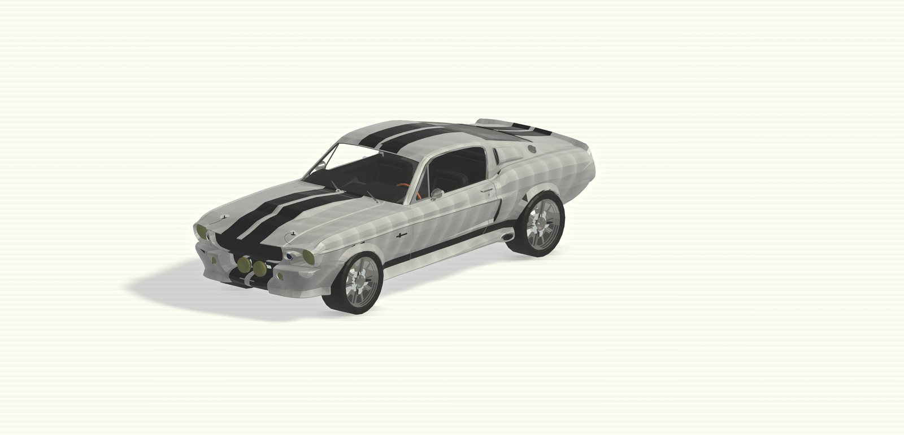

Biblioteca BIM · Archivos .rfa
Familias de Revit listas para usar
Modelos descargables que puedes cargar directamente en tu proyecto. Sin registro, sin marcas de agua y sin pasos intermedios: eliges el modelo, descargas el archivo y sigues trabajando.
- — Modelos
- RFA Formato nativo
- $0 Siempre gratis

Últimos modelos
Lo más reciente que hemos subido a la biblioteca.
-
Descarga directa
Un clic y el archivo
.rfaestá en tu equipo. Sin cuentas, sin correos de confirmación ni esperas. -
Formato nativo
Familias de Revit reales, no mallas importadas. Se cargan como cualquier otra familia del proyecto.
-
Geometría ligera
Modelos optimizados para que puedas colocar varias instancias sin castigar el rendimiento del archivo.
-
Uso libre
Puedes usar los modelos en proyectos personales y profesionales. Sin cuotas ni licencias por puesto.
En tres pasos
Cómo funciona
De la biblioteca a tu proyecto de Revit en menos de un minuto.
-
Elige el modelo
Busca por nombre o filtra por categoría en el catálogo hasta encontrar la familia que necesitas.
-
Descarga el archivo
Cada ficha indica formato, tamaño y versión mínima de Revit antes de descargar. El archivo baja directo.
-
Cárgalo en Revit
Abre tu proyecto y usa Insertar › Cargar familia. Selecciona el
.rfay colócalo en la vista.
Empieza a descargar
Todo el catálogo es gratuito y está disponible ahora mismo. Elige un modelo y llévatelo a tu proyecto.
Ir al catálogo